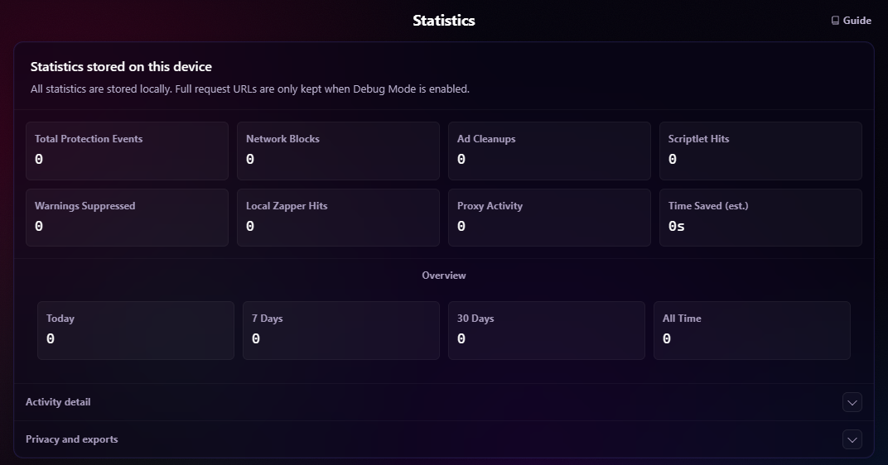

Protect & Customize
Statistics & Health
Use Protection Intelligence, privacy modes, local event history, exports, and Health diagnostics.
Open Protection IntelligenceChroma's statistics and diagnostics are local-only. They are designed to explain what the protection stack is doing without turning local browser activity into telemetry.
Protection Intelligence
The settings page includes Protection Intelligence, a local analytics dashboard that provides a broader view of Chroma's protection layers without changing blocking behavior or sending telemetry anywhere.
The popup headline shows Protection Events: recorded network actions + cosmetic cleanup reports + warning suppressions + YouTube payload cleanups + scriptlet runs + zapper reports. This is approximate activity, not a count of unique ads. A scriptlet run reports initialization, which may only install a hook or return without taking action. Different layers can act on related content.
Allow-rule matches, unknown network matches, scriptlet errors, fingerprint registrations, proxy tests and proxy authentication do not contribute to Protection Events. The popup's Proxy number shows separate activity; its compact breakdown is not a complete sum of the headline.
Network Actions includes reported blocks, redirects and HTTPS upgrades. Allow-rule matches counts explicit DNR allow/allowAllRequests matches, not every request that Chroma permitted. Network collection depends on Chrome exposing matched-rule feedback to the unpacked extension.

Event Tracker
The Events section in settings shows recent local activity from the protection stack. It can include:
- Network block, allow, and unknown-match classifications.
- Cosmetic cleanup and warning-suppression events.
- Scriptlet initialization runs and reported synchronous initialization errors.
- Local zapper actions.
- Coarse payload-modified events from supported platform handling.
- Proxy test and proxy authentication activity.
Payload cleanup appears in the Event Tracker and contributes to Ad Cleanups.
Approximate Page-Level Counts
Some YouTube and scriptlet activity is reported from the page itself, so those page-level totals are approximate diagnostics rather than an audit log. Chroma accepts only coarse event types and does not trust page-supplied URLs, domains, timestamps, or counts. These signals cannot change settings or control protection.
Reports are batched and rate limited. One cosmetic or warning report can cover multiple elements but adds one event. Scriptlet reports cover supported filter-list scriptlets and user resources, including remotely loaded User Scriptlets. They do not count each later action taken by an installed hook, asynchronous failures, or every built-in MAIN-world script. Startup reports observed while configuration is loading are buffered within the existing quota; events emitted before the listener exists can still be missed.
YouTube Export Counters
YouTube reports only cleaner operations that actually remove an ad-related field or object. Unchanged payload inspections are deliberately silent to keep playback overhead low. Multiple removals in one reported cleanup add one Protection Event.
| Export key | Meaning |
|---|---|
youtubePayloadsModified |
Reported payload cleanup operations; not unique responses or ads |
youtubePayloadInspections |
Legacy alias of reported modifications; does not count all inspections |
youtubePayloadCleans |
Legacy alias of reported modifications |
youtubeFieldsPruned, youtubeAdObjectsRemoved |
Historical detail, no longer collected from content |
The three payload counters can legitimately be identical. Since the July 13, 2026 telemetry change, detailed field/object counts are not forwarded, even though the cleaner still removes those fields and objects. A zero recent detail count means the measurement is unavailable. Existing keys and historical values remain in exports for compatibility. Full snapshots include collection metadata describing current coverage; it cannot reconstruct missing historical activity.
Privacy Modes
Protection Intelligence statistics are stored only in chrome.storage.local. These modes govern the statsV2 statistics dataset:
- Basic: Records totals only going forward. Existing aggregated history is preserved locally unless the user explicitly resets stats.
- Aggregated: Records totals plus domains, rule sources, resource types, timelines, and recent event summaries.
- Debug: May include recent full request URLs in
statsV2where they are available.
Switching privacy modes changes future statsV2 collection and URL visibility. It does not erase saved aggregate intelligence unless a reset action is used.
Aggregated mode is the default. Within statsV2, Chroma stores domains by default and retains full request URLs only in Debug mode.
Separate DNR Request Log
The Request Log is a separate dataset and is not controlled by the Basic, Aggregated, or Debug statistics mode. Whenever Chrome exposes DNR matched-rule feedback to the unpacked extension, Chroma records the newest 500 reported matches in chrome.storage.local. Entries can contain full request URLs, timestamps, request types, matched rule IDs, block, allow, or neutral/match actions, and rule sources such as whitelist or unknown.
Chroma clears this request log when the browser profile starts and Chrome fires runtime.onStartup. You can also reset it independently in settings. Changing statistics mode, resetting site statistics, or resetting all statsV2 statistics does not clear it. When Chrome does not expose matched-rule feedback, the Request Log remains unavailable even though browser-enforced blocking can continue normally.
Retention, Reset, And Export
Open Privacy and exports in Statistics to export your data or use the reset controls. Each reset asks for confirmation. Configuration backups are in Settings -> Backup -> Backup and restore.
The stats dashboard enforces hard caps on recent events, sites, rule entries, resource types, and daily history. Settings controls let you reset all statsV2 statistics, reset site statistics only, reset the separate DNR request log, or export a local JSON statistics snapshot.
Totals are lifetime values since the last full reset. Daily history retention applies only to UTC daily buckets (90 days by default). Today, 7 Days and 30 Days sum those retained UTC buckets; Basic-mode periods and timeline resets leave gaps. All Time uses lifetime totals directly.
The detail limits are 500 recent events, 250 sites, 500 rules and 50 resource types. These tables are capped by number, not expired by the daily retention period; they may include older activity or omit evicted entries. Pruning them never subtracts from lifetime totals. Site/rule row values include allow and diagnostic activity, so they need not match the protection headline. Network site attribution uses the request destination; content reports use the top-level tab domain.
Resetting statsV2 statistics does not erase the separate request log, configuration, subscriptions, proxy settings, whitelists, local zapper rules, or filter lists.
The Time Saved (est.) card estimates savings from protection events. It does not measure actual page-load time.
Health Panel
The settings page includes a Health panel for diagnostics. It shows whether each protection layer is active, disabled, degraded, unavailable, or in an error state, including:

- Static DNR rulesets.
- Dynamic rules.
- Tracking URL cleanup.
- De-AMP redirects.
- Subscriptions.
- Cosmetic filtering.
- Scriptlets.
- Fingerprint randomization.
- Browser privacy hardening.
- Geolocation protection.
- WebRTC protection.
- Proxy routing.
- Whitelists.
- DNR request-log feedback availability.
The panel is diagnostic-only. It reports counts and coarse status information, but does not expose proxy credentials, stored auth data, request URLs, raw filter rules, or request-log contents.
For proxy, WebRTC, browser privacy, and geolocation, Health separates stored/requested intent, whether Chroma controls the relevant Chrome setting, and the observed effective state. Master-off requests appear paused rather than mismatched; another controller appears degraded or Controlled elsewhere.
Request Log availability depends on Chrome exposing matched-rule feedback to the unpacked extension. When that feedback is unavailable, blocking can still work normally.
Next: Permissions